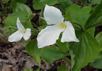

Skip to Content
Door County Wildflowers

Door County
Wisconsin’s Door County Peninsula is a unique, ecologically diverse place with upland and boreal forest, bogs, swamps, sand and rock beaches, limestone escarpments, and farmlands.
A wide array of wildflowers grow in the county because of this variety of ecosystems.
Explore the beauty
of Door County Wildflowers. . . .
With five state parks, tons of county parks, and private nature sanctuaries, Door County is teeming with natural areas for you to stalk your favorite wildflowers.